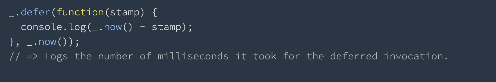

Speaker: Maryna Petrenko
Hi everyone, my name is Marina and today I’m going to tell you about Lodash.
What is Lodash?
I would like to start with its definition and a little background.
So what is Lodash?
Lodash is a JavaScript library which provides
utility functions for common programming tasks using the
functional programming paradigm
In other words Lodash makes programmers’ life easier by providing ready-to-use functions for working with
various objects and helps programmers write concise and maintainable code.
History
John-David Dalton (@jdalton)
Initial release: April 23, 2012
The original author of Lodash is John-David Dalton. The initial release came out on
April 23, 2012. From the start, Lodash was created as a fork of Underscore.js library,
but since then has managed to become its superset, adding new features and performing much better.
In a browser
To install Lodash in a browser you may use external url. Or download the build.
Using npm
$ npm i -g npm
$ npm i --save lodash
in Node.js
// Load the full build.
var _ = require('lodash');
// Load the core build.
var _ = require('lodash/core');
// Load the FP build for immutable auto-curried iteratee-first data-last methods.
var fp = require('lodash/fp');
// Load method categories.
var array = require('lodash/array');
var object = require('lodash/fp/object');
// Cherry-pick methods for smaller browserify/rollup/webpack bundles.
var at = require('lodash/at');
var curryN = require('lodash/fp/curryN');Or Node.js And voila, you can use Lodash methods in your application
Documentation is here:
https://lodash.com
The documentation and detailed description of all Lodash methods you can find on lodash.com
Compatibility
Modularity
Clear and functional syntax
High-quality documentation
You may ask “Why should I use Lodash instead ES6, when it has a lot of duplicated methods?”
To answer this question, I want to list some of Lodash advantages that I found.
The first is compatibility. You don't have to worry about it. Lodash works on all browsers, even on old ones.
Next is modularity. Lodash functions are broken into separate modules, and you may only import a specific
module or just one function rather than importing the whole library
Next one is clear and functional syntax that enables writing more concise code.
And the last one is high-quality documentation, where you can find full description of all methods with
examples, choose the version of Lodash and so on.
Now, let’s proceed to one interesting example.
_.map vs .map
// Lodash
const users = [
{ 'user': 'Bob' },
{ 'user': 'Ted' }
];
const arr = _.map(users, 'user');
console.log(arr);
// output: ['Bob', 'Ted']
// Native
const users = [
{ 'user': 'Bob' },
{ 'user': 'Ted' }
];
const arr = users.map('user');
// error!
Let’s imagine that you have an array of objects and you need to get its properties. Lodash map can do this
using the _.property iteratee shorthand, but native map doesn't support it. Instead, you should write
something like this.
const users = [
{ 'user': 'Bob' },
{ 'user': 'Ted' }
];
const arr = users.map( obj => obj.name );
// output: ['Bob', 'Ted']
Lodash can be broken down into several main areas:
Array
Collection
Date
Function
Lang
Math
Number
Object
Seq
String
Util
Properties
Methods
Array
_.chunk(array, [size=1])
Naturally, all Lodash array methods work on arrays. It's probably the biggest collection of Lodash methods.
Let's take a look on chunk method, that creates an array of elements split into groups the length of size.
If array can't be split evenly, the final chunk will be the remaining elements.
And here you can see how it will looks like in native JS. I think Lodash method is pretty good.
Collection
_.size(collection)
// Lodash
const result = _.size({one: 1, two: 2, three: 3});
console.log(result)
// output: 3// Native
const result = Object.keys({one: 1, two: 2, three: 3}).length;
console.log(result2)
// output: 3This group includes methods that can be used to work with arrays, objects and strings.
Size method returns the collection size. Let's compare the implementations. I think Lodash variant is
more convenient
Date
_.now()

When it comes to date collection, there's only one method - now.
Function
_.flip(func)
Function collection probably includes some of the most complex methods.
Lodash provides us with many helpful shorthands for some of the functions-related stuff.
For example, method flip creates a function that invokes func with arguments reversed.
Lang
_.clone(value)
Lang collection is very diversified. It contains methods that work on a variety of data
types. These cover various is checks (e.g. _.isArray(), _.isNumber()), value conversions (e.g. _.toNumber(),
_.toString()), cloning and deep cloning functionalities.
Clone method creates a shallow clone of value.
Math
_.mean(array)
Math collection that operates on number arrays can prove to be quite useful,
for example let’s take a look on _.mean(array) method, that computes the mean of the values in array.
Number
_.random([lower=0], [upper=1], [floating])
Number collection, in fact, includes only 3 methods i.e. _.clamp(), _.inRange()
and _.random(), all of which provide some casual functionalities with additional features.
Take _.random() for example. Instead of outputting completely random number, you can easily
limit it to a certain range and decide whether you want it to be an integer or floating-point
number with just a simple set of arguments.
Object
_.pick(object, [paths])
Object collection groups methods that work primarily on objects.
Methods are connected with the iteration capabilities, object assignment , merging, cloning and differentiating.
Pick method creates an object composed of the picked object properties.
Seq
Seq is a collection of prototype methods, centered around one functionality -
Lodash value wrapper (_()). With such wrapper in place, you can omit the
repeating _. and use your methods directly on your value
(e.g. _(1).add(1))
String
_.camelCase([string=‘'])
Methods from string collection cover some pretty useful capabilities like converting
between different case types, methods for swapping letters, string-array conversion, regex integration and more.
For example, method camelCase converts string to camel case.
Util
_.range([start=0], end, [step=1])
There isn't really any rule that groups all these methods together. Thus, there's almost
no method that has its direct native equivalent.
Method range creates an array of numbers (positive and/or negative) progressing from start up to, but not
including, end.
Properties and Methods
templateSettings
_.VERSION
And the last two are Properties and methods:
Contain a small group of functions for dealing with templateSettings
Contains version information via _.VERSION, useful when code needs to run with different versions of Lodash.
Thank you!
In conclusion I want to say that, although there are a lot of native methods that could
replace Lodash methods, this library is still very powerful and useful. Maybe for someone it is more
convenient to use Lodash. So using it or not is your personal choice, but I recommend you to try it.
That’s all.
Thanks for watching.Bye.